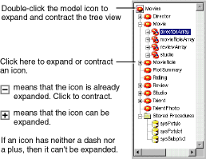
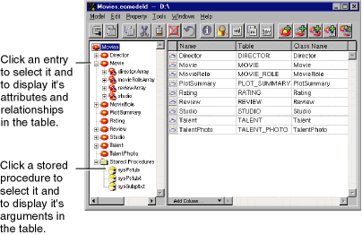

PATH
WebObjects 4.0 Documentation >
EOF Tools and Techniques
 Table of Contents
Table of Contents  Previous Section
Previous Section
Navigating a Model With the Tree View
You navigate a model by clicking icons in the Model Editor's tree view. In Figure 12, the icon labeled Movies (in the upper left corner of the tree view) represents the model itself. You double-click this icon to expand and contract the tree view. When the tree view is expanded, it shows the model's entities.

Figure 12. Expanding the Tree View
Similarly, you can expand a model's entities and stored procedures folder. As shown in Figure 12, expanding an entity displays the entity's relationships. A relationship in the tree view represents the relationship's destination entity. Expanding the relationship in the tree view in displays the destination entity's relationships, and so on. Expanding the stored procedures folder displays the model's stored procedures.
You control what's displayed in the Model Editor's table by selecting icons in the tree view. When the model is selected (as shown in Figure 13), the Model Editor displays the model's entities in the table. To display an entity's attributes and relationships in the table, select the entity. Similarly, to display a stored procedure's attributes, select it.

Figure 13. Changing the Table's Contents
You can also use the icons in the tree view in drag and drop operations-for example, to drag an entity into the Data Browser (described in the chapter Interacting with a Database) or into WebObjects Builder (described in the chapter "Creating a WebObjects Database Application" in the book Getting Started with WebObjects).
Table of Contents  Next Section
Next Section